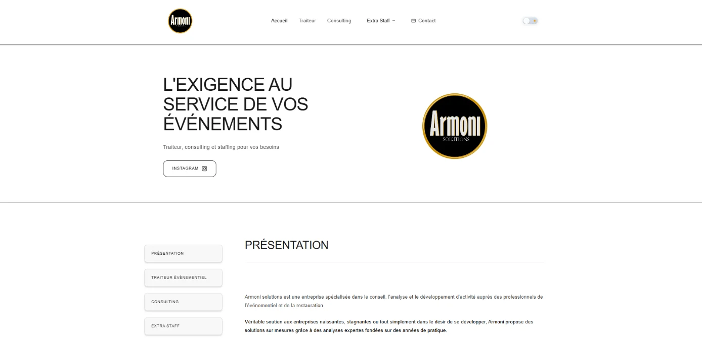
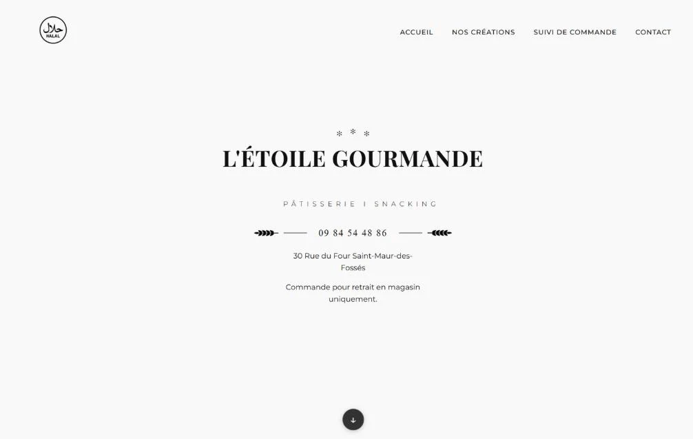
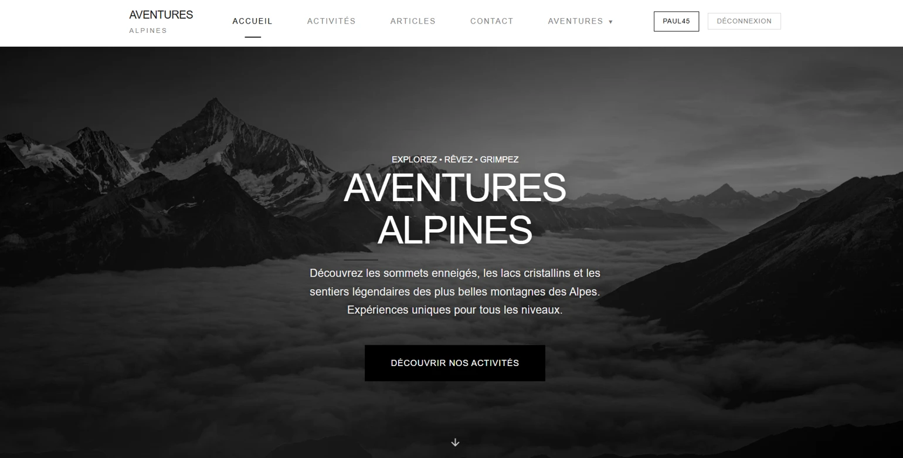
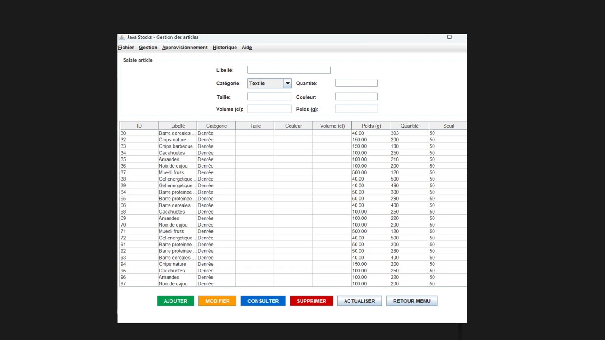

Stage en entreprise
Armoni Solutions
J’ai développé les formulaires en PHP, relié les demandes à MySQL et mis le site en ligne sur OVH pour un prestataire événementiel.
Développement web et support informatique
Actuellement à la recherche d’une opportunité professionnelle en Île-de-France, j’ai acquis de l’expérience en développement web à travers plusieurs projets réalisés en entreprise et à titre personnel.

J’ai développé les formulaires en PHP, relié les demandes à MySQL et mis le site en ligne sur OVH pour un prestataire événementiel.

Pour une boulangerie, j’ai travaillé sur le catalogue, le parcours de commande et l’intégration de Stripe en mode test.

Découvrir une activité de montagne, choisir sa sortie et la réserver depuis une même application.

Une application de gestion de stock pour suivre les quantités de matériel lors d’un événement sportif.
Développement PHP et MySQL, formulaires et mise en ligne sur OVH.
Création d’un site de boulangerie avec catalogue et parcours de commande.
Deux années consacrées au développement d’applications et aux bases de données, après un bac professionnel Systèmes numériques, option RISC, obtenu en 2024.
React, JavaScript, PHP, Node.js, Express, HTML et CSS. Conception d’interfaces, d’API et de formulaires reliés à une base de données.
Installation de postes Windows, diagnostic matériel, configuration réseau et VLAN. Pratique de Linux et apprentissage personnel de Docker.
Interfaces de bureau en Java Swing, gestion de stocks sous PostgreSQL et modélisation de données avec MySQL.